Aufbruch: Frühstück unter Palmdach auf bunten Tischdecken, dann quer über die Halbinsel ins Landesinnere.
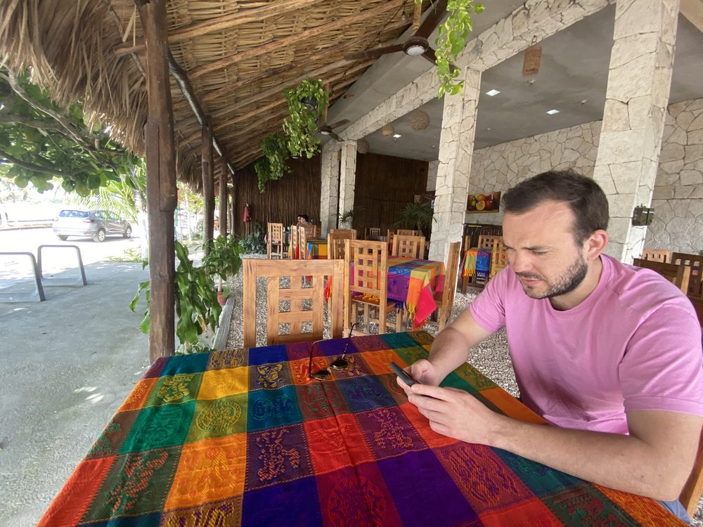
Chichén Itzá: Die bekannteste Maya-Stätte Mexikos, Blütezeit etwa 900–1200 n. Chr., seit 1988 UNESCO-Welterbe und seit 2007 eines der „neuen sieben Weltwunder". Die Pyramide des Kukulcán (El Castillo) ist ein steinerner Kalender: 4 × 91 Stufen plus Plattform ergeben 365. Zur Tag-und-Nacht-Gleiche kriecht ein Schattenband wie eine Schlange die Treppe hinab. Besteigen ist seit 2008 verboten.
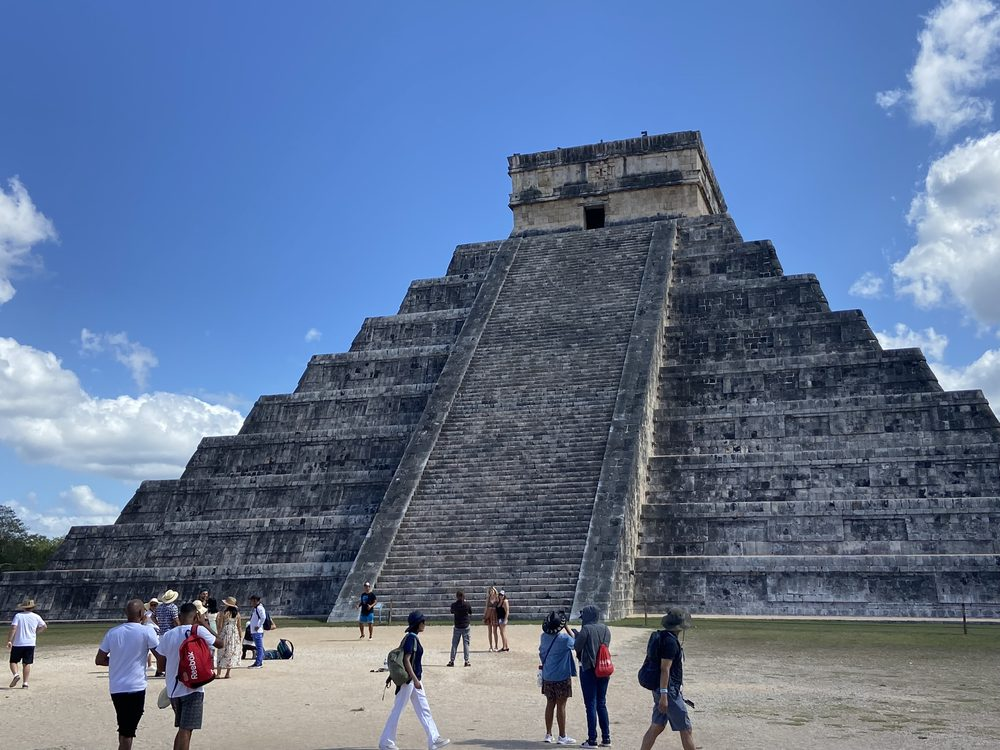
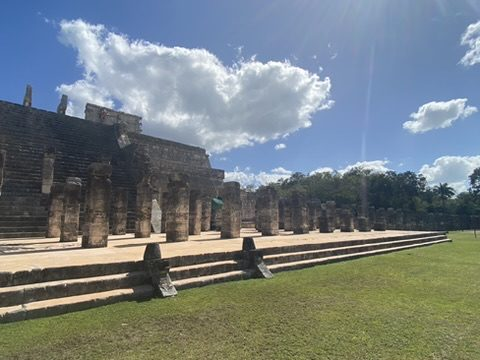
Der Tempel der Krieger mit der „Gruppe der tausend Säulen" davor – einst trugen die Säulen ein Dach.
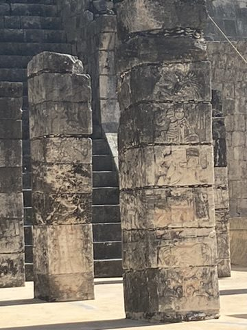
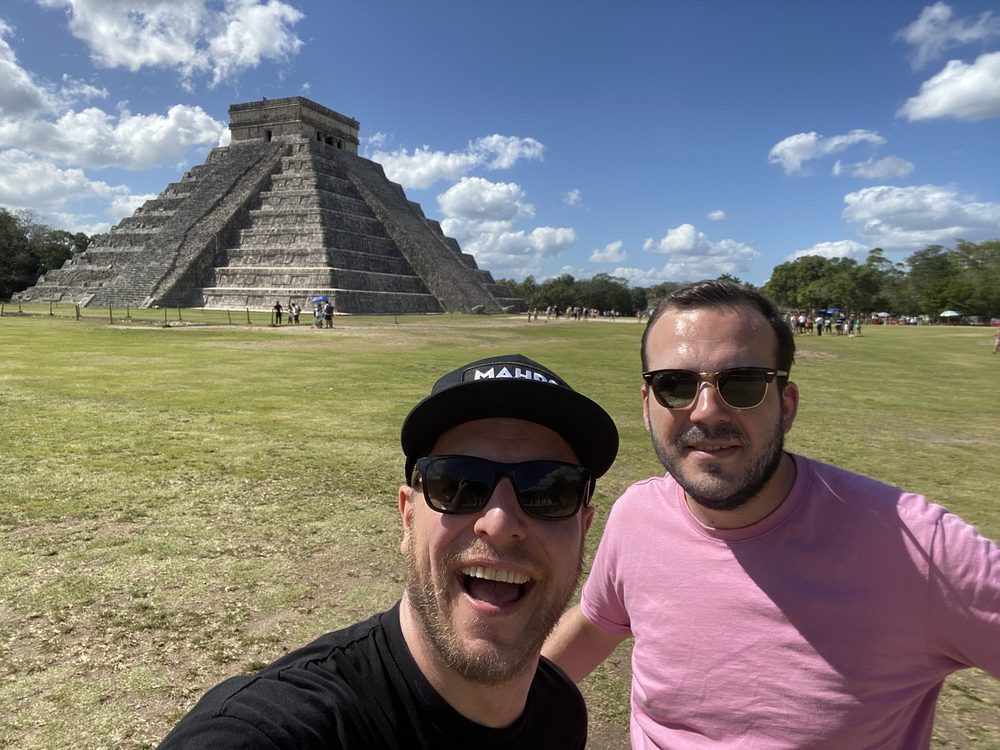
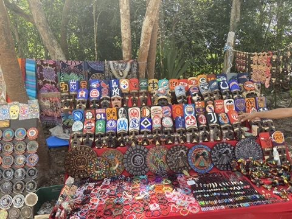

Cenote Sagrado und Ballspielplatz: Der Heilige Cenote war ein Opferbrunnen: Anfang des 20. Jahrhunderts holte man Gold, Jade, Keramik und menschliche Knochen vom Grund. Der große Ballspielplatz ist mit 168 m Länge der größte Mesoamerikas; die Reliefs an den Wänden zeigen die Enthauptung eines Spielers.
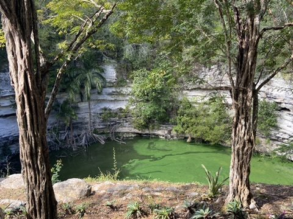
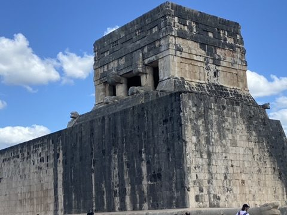
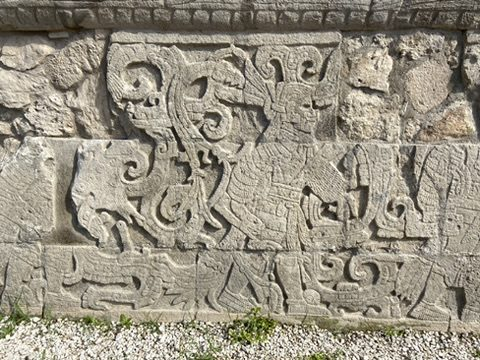
Campeche: Weiter an die Golfküste nach Campeche, rechtzeitig zum Sonnenuntergang am Malecón. Die Stadt wurde ab Ende des 17. Jahrhunderts nach wiederholten Piratenüberfällen mit einer Mauer und Bastionen befestigt; die farbenfrohe Altstadt ist seit 1999 UNESCO-Welterbe.
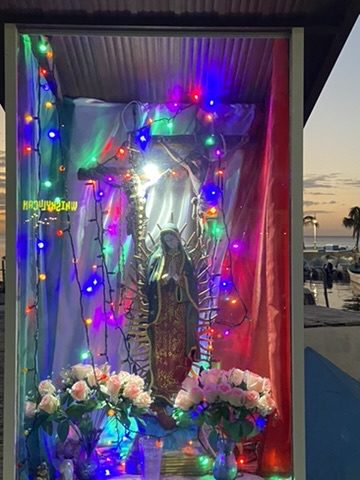
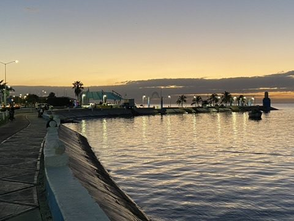
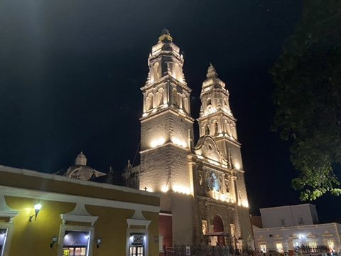
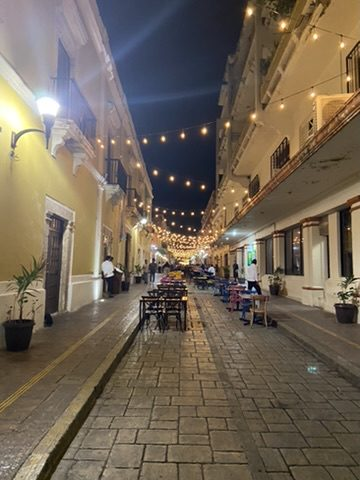
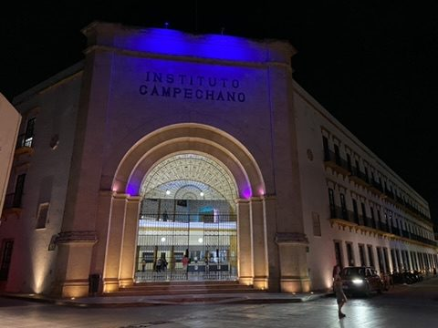